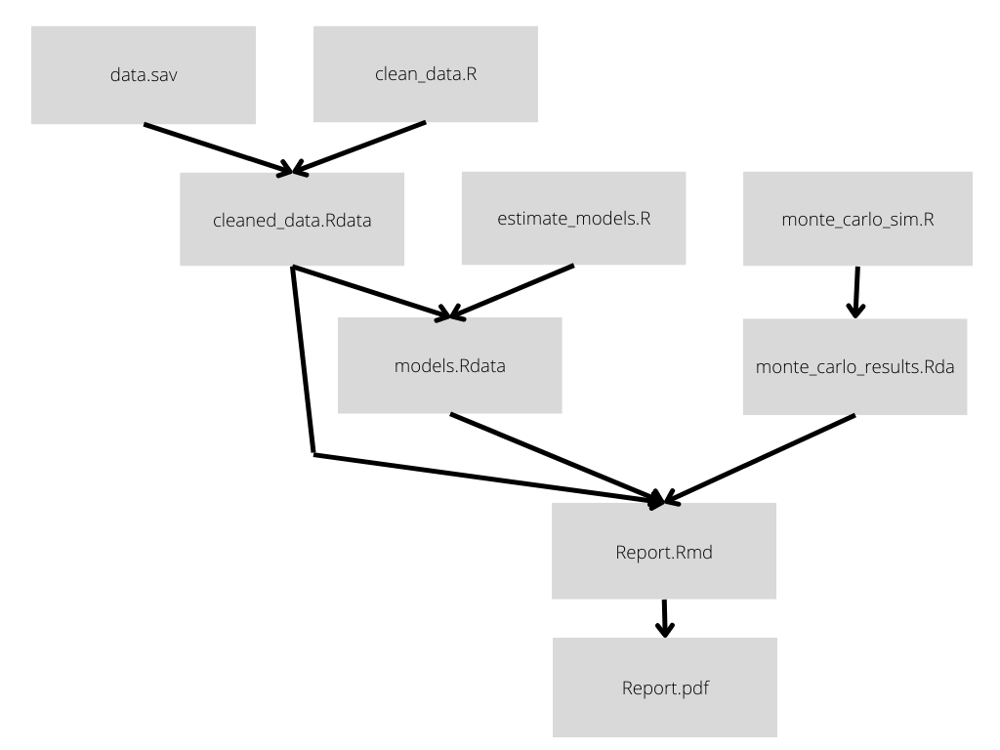

Make Research Reproducible with 'GNU Make'
Contents
GNU Make is a computer program long known to computer scientists, but tragically underused in the social sciences. Originally developed to manage the compilation of C/C++ code, Make can be used to automate running stages of your data analysis code whenever changes are made to the code that generates them. Using make will save time (code is run if and only if its dependencies are updated), eliminate a common class of errors (code is never run using old data or calculations), and free up your head space to write code rather than managing dependencies.
The main goal of this post is to help combat the information segregation and expose more social scientists to make.
When Should you consider Make?
I use Make for smaller projects, especially
when I need a language-agnostic build system. If you are using exlusively Python
or R, I would reccomend ploomber and
targets which provide language-specific
alternatives which have some more advanced features for mono-lingual projects.
Here’s a simplified diagram of a project that I recently used Make to build.
The project has four main stages:
- The data must be cleaned
- Models are fit to the cleaned data
- A set of monte-carlo simulations have to be run
- The models and simulation results are reported in a pdf document rendered using Rmarkdown.

Here’s the same information encoded in a flow chart, which shows how the dependencies “flow”: when code or data is changed, the results must be propagated along the arrows until they are incorporated into the final report.pdf.
Even for a small project such as this, keeping track of which code needs to be run can require considerable mental effort. Step 4 must be run in response to any change in the underlying codebases. The monte carlo simulations don’t rely on the cleaned data or models, so they only have to be run in response to changes to the simulation code.
Manually re-running code in response to changes opens the door for errors as
one may forget which stages need to be run. A master run script which
re-renders the entire pipeline wastes time, as all steps are run even if they
don’t need to be. Make or a similar build system proivdes a principled way
to solve this challenge as it ensures that updated code is always run in
response to changes but that no code that has not been changed is run, saving
time.
Below, I show how you can encode these dependencies in a make file, which
tells make how to rebuild the project in response to any of the underlying
dependencies changing. You can probably already infer the syntax: products are
specified on the left, and the files upon which they depend on the right after
a colon. On the next line (after using spaces to indent the code), you specify
the commands that are used to build the product from the dependencies.
|
|
And now for the amazing part! To build run the entire project, updating only the necessary parts, you must simply run:
|
|
This will rebuild the project in the least possible amount of time, while ensuring that all of the results are up-to-date and reproducible.
Author Beniamino Green
LastMod 2022-06-22